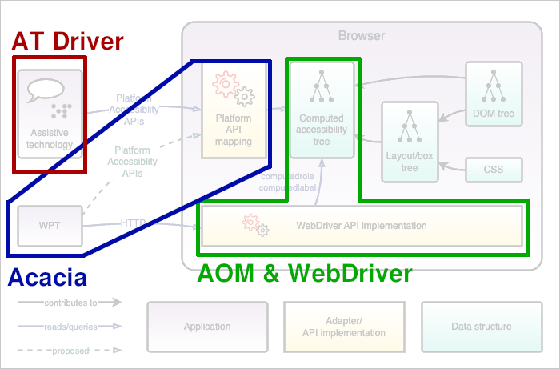

## Automating Assistive Tech with Standards [Web Engines Hackfest](https://webengineshackfest.org/), 2025-06-02 <p class="license"> Except where noted, this presentation is licensed via <a rel="license" href="http://creativecommons.org/licenses/by-sa/4.0/"> CC BY SA 4.0 <img alt="Creative Commons License" style="border-width:0" src="cc-by-sa-4.0.png"></a> <p> --- ## Hello! <img class="r-stretch" src="bob-bust.png" alt="The Bocoup logo: a cartoon rendering of a rooster" /> [Bocoup](https://bocoup.com), a worker-owned tech consultancy [Mike Pennisi](https://mikepennisi.com) (he/him), a worker-owner --- ## Outline 1. Active automation efforts 2. The AT Driver standard and the ARIA-AT Community Group 3. Future work --- <figure> <cite>Image credit: <a href="https://titanus.it/">Titanus</a></cite> </figure> Note: When it comes to creating equitable experience for folks with disabilities, it often feels like this work should have been done decades ago. Be that as it may, it's happening now! --- ### Active automation efforts **[Craig Morten's GuidePup](https://www.guidepup.dev/)** - subscribe to a stream of speech being read by screen readers **[W3C's WebDriver](https://w3c.github.io/webdriver/)** - query the accessibility tree for fundamental values like ["computed role"](https://w3c.github.io/webdriver/#get-computed-role) **[W3C's AOM + WebDriver](https://github.com/WICG/aom/issues/203)** - query the accessibility tree for even more properties such as ["required"](https://w3c.github.io/core-aam/#event-aria-required) **[Igalia's Acacia](https://github.com/web-platform-tests/rfcs/pull/204)** - query the [platform accessibility API mapping](https://w3c.github.io/core-aam/) Note: - GuidePup - available today - empowers developers to understand how their work is presented to screen reader users - limited to one type of AT: screen readers - not currently on a standards track - WebDriver - available today - weakness: limited scope - AOM + WebDriver - being designed as we speak - clear deployment path (extension to an existing standard) - Acacia - enables automated testing of a novel surface: the accessibility API mapping - only accessible from [the Web Platform Tests](https://github.com/web-platform-tests/wpt) --- ## AT Driver > A standard protocol for introspection and remote control of assistive > technology software, using a bidirectional communication channel. https://github.com/w3c/at-driver Note: We have initially limited our focus to screen readers because you have to start somewhere, but as the name implies, our scope includes all types of assistive technology. --- ## AT Driver: in action <video autoplay loop aria-label="A screen recording of a macOS system featuring a web browser operating a radio group alongside a Terminal window which streams structured data describing the key presses and spoken text" src="demo-macos.mp4" /> Note: Here, we see the AT Driver protocol being used to automatically observe the behavior of VoiceOver and Safari when rendering a radio group. --- ## AT Driver: vitals - Chartered under [the W3C's Browser Testing and Tools Working Group](https://www.w3.org/groups/wg/browser-tools-testing/) - Inspiration from [WebDriver BiDi](https://github.com/w3c/webdriver-bidi/) (JSON over WebSockets, "remote end"/"local end" abstractions, "command" and "event" patterns) - Distinction: these user agents are not web browsers. There is no "browsing session," no "DOM", no "elements," etc. --- ## Testing Surfaces <figure> <cite>Image credit: <a href="https://notes.igalia.com/p/u3q-Rq8C">Acacia (for ARIA WG)</a>, Igalia</cite> </figure> --- ## Testing Surfaces <figure>  <cite>Image credit: <a href="https://notes.igalia.com/p/u3q-Rq8C">Acacia (for ARIA WG)</a>, Igalia</cite> </figure> --- ## Implementation status <table style="font-size: 0.5em"> <thead> <tr> <th>name</th> <th>maintainer</th> <th>tech</th> <th>status</th> </tr> </thead> <tbody> <tr> <td>Windows AT Driver Server</td> <td><a href="https://bocoup.com">Bocoup</a></td> <td>TTS voice & OS key press simulation</td> <td>defunct</td> </tr> <tr> <td><a href="https://github.com/Prime-Access-Consulting/nvda-at-automation">NVDA AT Driver Server</a></td> <td><a href="https://pac.bz/">Prime Access Consulting</a> & <a href="https://bocoup.com">Bocoup</a></td> <td>screen reader add-on</td> <td>active</td> </tr> <tr> <td><a href="https://github.com/bocoup/at-driver-servers/">macOS AT Driver Server</a></td> <td><a href="https://bocoup.com">Bocoup</a></td> <td>TTS voice & OS key press simulation</td> <td>active</td> </tr> <tr> <td>JAWS AT Driver Server</td> <td><a href="https://vispero.com/">Vispero</a></td> <td>screen reader DLL</td> <td>in development</td> </tr> <tbody> </table> --- ## Shoutout ARIA-AT <iframe src="https://player.vimeo.com/video/651279608?h=45aefd646f&byline=false&dnt=true&portrait=false" width="640" height="340" frameborder="0" allow="autoplay; fullscreen; picture-in-picture" allowfullscreen="" title="ARIA-AT Video"> </iframe> https://aria-at.w3.org Note: The ARIA-AT Community Group is actively working to define expectations for the behavior of assistive technology and to promote implementation correctness. We've been developing AT Driver to support their work, but we anticipate the protocol's eventual use by web authors. --- ## Future - Define a collection of "intents" (first up: [activate element](https://github.com/w3c/at-driver/pull/82)) - Implement for Android's TalkBack and Apple's Mobile Safari - Extend beyond screen readers - Extend beyond the web platform? Note: - Other user intents might include things like "move to next heading" or "move to previous form field" - Other assistive technologies might include braille displays or magnifiers - This protocol could be used to write automated tests for native applications, though it's unclear if the use of WebSockets would be a significant impediment to adoption. --- ## Thanks! <iframe src="https://www.youtube.com/embed/Y8r7FNPJwZg" title="ARIA-AT Automation Harness demo - Windows - May 2025" frameborder="0" allow="accelerometer; autoplay; clipboard-write; encrypted-media; gyroscope; picture-in-picture; web-share" referrerpolicy="strict-origin-when-cross-origin" allowfullscreen></iframe> Mike Pennisi (he/him), [mike@bocoup.com](mailto:mike@bocoup.com)